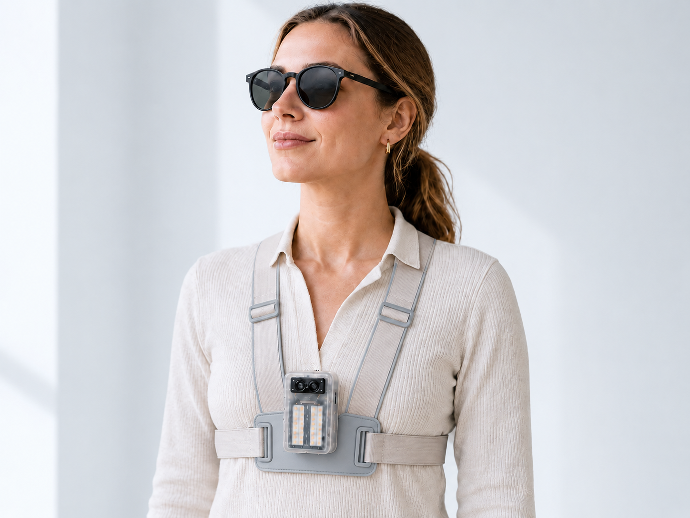

LROX Guide unterstützt blinde und sehbehinderte Menschen bei der Orientierung. Das System erkennt Hindernisse, signalisiert den Stopp und hilft dabei, eine freie Richtung zu identifizieren.
Sensoren erkennen Hindernisse, Stufen, Kanten und freie Wege.
LROX Guide arbeitet vollständig ohne Kamera und offline. Das System nutzt ausschließlich Sensoren, um Hindernisse, Stufen, Kanten, Vertiefungen und andere Wegelemente zu erkennen, die Umgebung zu prüfen und eine freie Richtung zu bestimmen.

LROX Guide wird zentral am Oberkörper getragen. Die Halterung positioniert das System körpernah und lässt beide Hände frei.
LROX Guide entsteht durch iterative Entwicklung – von der Konstruktion des Gehäuses über die Integration der Elektronik bis zum tragbaren Prototypen.
Die wichtigsten Antworten zu Funktion, Entwicklung und aktuellem Stand von LROX Guide.
Nähert sich die Person einem Hindernis, einer Kante oder einer Vertiefung, gibt LROX Guide über verbundene Kopfhörer oder einen Lautsprecher einen akustischen Hinweis. Anschließend fordert das System dazu auf, sich nach rechts und links zu orientieren. Wird eine freie Richtung erkannt, weist LROX Guide darauf hin, sich dorthin zu drehen und den Weg fortzusetzen.
Nein. LROX Guide befindet sich derzeit noch in der Prototypen- und Entwicklungsphase und ist aktuell nicht für den Verkauf verfügbar.
Ein endgültiger Preis steht derzeit noch nicht fest. Durch den Verzicht auf teure Kamerasysteme und den gezielten Einsatz kompakter Sensorik ist das Ziel, die Kosten deutlich unter denen vieler heutiger kamerabasierter Assistenzsysteme zu halten.
Nein. LROX Guide arbeitet ohne Kamera und verarbeitet die Sensordaten lokal. Für die grundlegende Orientierung ist keine Cloud-Verbindung erforderlich.
Nein. LROX Guide ist als zusätzliche Mobilitätsassistenz gedacht. Das System soll einen Blindenstock nicht ersetzen, sondern ihn durch zusätzliche Hinweise zu Hindernissen und möglichen freien Richtungen ergänzen.
Die Hinweise werden akustisch über verbundene Kopfhörer oder einen Lautsprecher ausgegeben. So kann LROX Guide beispielsweise vor einem Hindernis warnen und anschließend Hinweise zur Prüfung einer freien Richtung geben.